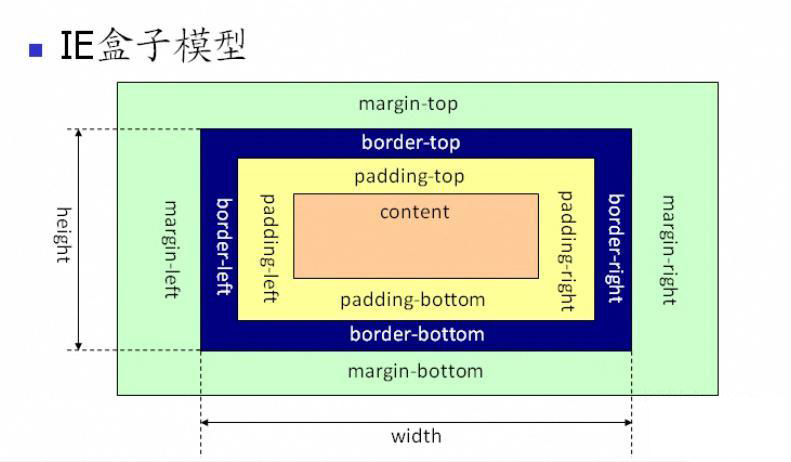
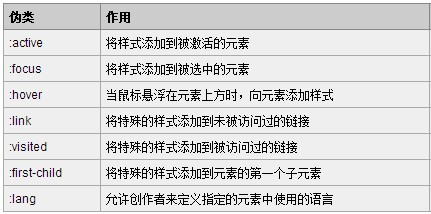

HTML
1.html5\CSS3有哪些新特性、移除了那些元素？如何处理HTML5新标签的浏览器兼容问题？如何区分 HTML 和 HTML5？
主要增加关于图像，位置，存储，多任务
绘图canvas:用于媒介回放video和audio元素
本地离线存储localStorage长期的存储数据，浏览器关闭后数据不会丢失。 sessionStorage的数据在浏览器关闭后自动删除
语义化更好的内容标签比如article,footer,header,nav,section
移除的元素:
纯表现的元素：basefont，big，center，font, s，strike，tt，u；
对可用性产生负面影响的元素：frame，frameset，noframes；
2.Doctype作用？标准模式与兼容模式各有什么区别?
(1)<DOCTYPE>声明位于文档中的最前面，处于<html>标签之前，告知浏览器的解析器，用什么文档类型、规范来解析这个文档。
区别：严格模式是浏览器根据规范去显示页面；混杂模式是以一种向后兼容的方式去显示 意义：决定浏览器如何渲染网站（浏览器使用那种规范去解析网页） 触发：浏览器根据doctype是否存在和使用的是那种dtd来决定
3.你真的了解HTML吗？–雅虎面试题
有这么一段HTML，请挑毛病：
考点1：html和 xhtml的区别 这行代码在html 4.01 strict下是完全正确的，在xhtml 1.0 strict下是错误一堆的。所以明显是一个考点。在xhtml下所有标签是闭合的，p,br需要闭合, 标签不允许大写，P要小写。同时nbsp和br必须包含在容器里。html下这些都不是错。p在html里是可选闭合标签，是可以不用闭合的。
考点2：考样式分离 用nbsp控制缩进是不合理的。应该用CSS干这事。所以应该删掉nbsp
考点3：合理使用标签 br是强制折行标签，p是段落。原题用连续的br制造两个段落的效果，效果是达到了，但显然用的不合理，段落间距后期无法再控制。正确的做法是用两个p表现两个段落。“我说”后面是正常的文字折行用br是合理的。
4.HTML5 为什么只需要写 ？
HTML5 不基于 SGML，因此不需要对DTD进行引用，但是需要doctype来规范浏览器的行为（让浏览器按照它们应该的方式来运行）； 而HTML4.01基于SGML,所以需要对DTD进行引用，才能告知浏览器文档所使用的文档类型。
5.行内元素有哪些？块级元素有哪些？ 空(void)元素有那些？
(1).行内元素有：a,b,span,img,input,select,strong
(2).块级元素有：p,div,ul,ol,li,dt,dd,h1-h4
(3).空元素有:br,hr,img,input,link,meta,area,base,col,command,embed,keyan,param,source,track,wbr
6.页面导入样式时，使用link和@import有什么区别？
(1).link属于XHTML标签，除了加载CSS外，还能用于定义RSS, 定义rel连接属性等作用；而@import是CSS提供的，只能用于加载CSS;
(2).页面被加载的时，link会同时被加载，而@import引用的CSS会等到页面被加载完再加载;
(3).import是CSS2.1 提出的，只在IE5以上才能被识别，而link是XHTML标签，无兼容问题;
CSS
1.介绍一下CSS的盒子模型？
（1）有两种， IE 盒子模型、标准 W3C 盒子模型；IE的content部分包含了 border 和 pading;
（2）盒模型： 内容(content)、填充(padding)、边界(margin)、 边框(border).

2.CSS选择符有哪些？哪些属性可以继承？
1.id选择器（ # myid）
2.类选择器（.myclassname）
3.标签选择器（div, h1, p）
4.相邻选择器（h1 + p）
5.子选择器（ul > li）
6.后代选择器（li a）
7.通配符选择器（ * ）
8.属性选择器（a[rel = "external"]）
9.伪类选择器（a: hover, li: nth - child）
可继承的样式： font-size font-family color, UL LI DL DD DT;
不可继承的样式：border padding margin width height ;
3.CSS优先级算法如何计算？ * 优先级就近原则，同权重情况下样式定义最近者为准;
载入样式以最后载入的定位为准;
优先级为:!important > id > class > tag important 比 内联优先级高
4.CSS 伪类
- CSS 伪类用于向某些选择器添加特殊的效果。
- CSS 伪元素用于将特殊的效果添加到某些选择器。
- p:first-of-type 选择属于其父元素的首个 p元素的每个 p 元素。
- p:last-of-type 选择属于其父元素的最后 p 元素的每个 p元素。
- p:only-of-type 选择属于其父元素唯一的 p 元素的每个 p 元素。
- p:only-child 选择属于其父元素的唯一子元素的每个 p 元素。
- p:nth-child(2) 选择属于其父元素的第二个子元素的每个 p 元素。
- :enabled :disabled 控制表单控件的禁用状态。
- :checked 单选框或复选框被选中。
伪类种类
伪元素种类

CSS3新增伪类
5.如何居中div？如何居中一个浮动元素？如何让绝对定位的div居中？
给div设置一个宽度，然后添加margin:0 auto属性
居中一个浮动元素
让绝对定位的div居中
6.display有哪些值？说明他们的作用。
- block 象块类型元素一样显示。
- inline-block 象行内元素一样显示，但其内容象块类型元素一样显示。
- list-item 象块类型元素一样显示，并添加样式列表标记。
Javascript
1.JavaScirpt作用域
上面代码的输入结果为？
答案：
5
这个问题考查的要点是两个不同的作用域，'a'被var声明成了一个局部变量，但是'b'实际上没有被定义，所以它是一个全局变量。
这个问题还牵扯到另个一个比较重要的问题，就是strict mode，如果你选择了strict mode，上面的代码就会报Uncaught ReferenceError，因为b没有被定义，它可以帮你检查出代码的一些问题
2.创建“native”方法
这样会打印出hellohellohello。
其中一种方法的实现是：
3.Javascript预编译
答案：undefined和2。
4.请描述一下cookie,sessionStorage,localStorage的区别
cookie在浏览器和服务器间来回传递，sessionStorage和localStorage并不会
sessionStorage和localStorage的存储空间更大
sessionStorage和localStorage各自独立的存储空间
5.介绍js的基本数据类型
6.闭包
Javascript允许使用内部函数---即函数定义和函数表达式位于另一个函数的函数体内。而且，这些内部函数可以访问它们所在的外部函数中声明的所有局部变量、参数和声明的其他内部函数。当其中一个这样的内部函数在包含它们的外部函数之外被调用时，就会形成闭包。
浏览器兼容
4.当float和margin同时使用时，IE6的双倍边距BUG如何解决？
2.浏览器的内核分别是什么？
IE浏览器的内核是Triden
Mozilla FireFox浏览器的内核是Gecko
Opera浏览器的内核是Presto
Safari浏览器的内核是Webkit
Chrome浏览器的内核是Webkit
8.常见的兼容性问题？
png24位浏览器在IE6上出现背景，解决方案是做成PNG8
浏览器默认的margin和padding不同。解决方案是加一个全局的设置*{margin:0;padding:0}
IE双边距bug;块属性标签float后，又有横向的margin情况，在IE6显示margin比设置的大。
\9---IE6、7、8识别
+---IE6,7识别
_---IE6识别
其他
1.Node.js的使用场景
2.前端组件化与组件生态？
3.前端统计
4.什么是AJAX？
Ajax这个概念的最早提出者Jesse James Garrett认为:Ajax是Asynchronous JavaScript and XML的缩写。Ajax并不是一门新的语言或技术,它实际上是几项技术按一定的方式组合在一在同共的协作中发挥各自的作用,它包括: ·使用XHTML和CSS标准化呈现; ·使用DOM实现动态显示和交互; ·使用XML和XSLT进行数据交换与处理; ·使用XMLHttpRequest进行异步数据读取; ·最后用JavaScript绑定和处理所有数据; Ajax的工作原理相当于在用户和服务器之间加了—个中间层,使用户操作与服务器响应异步化。并不是所有的用户请求都提交给服务器,像—些数据验证和数据处理等都交给Ajax引擎自己来做,只有确定需要从服务器读取新数据时再由Ajax引擎代为向服务器提交请求。
Git
1.Git是什么？
Git是目前世界上最先进的分布式版本控制系统。
2.SVN和Git的最主要区别？
SVN是集中式版本控制系统，版本库是集中放在中央服务器的，而干活的时候，用的都是自己的电脑，所以首先要从中央服务器哪里得到最新的版本，然后干活，干完后，需要把自己做完的活推送到中央服务器。集中式版本控制系统是必须联网才能工作，如果在局域网还可以，带宽够大，速度够快，如果在互联网下，如果网速慢的话，就纳闷了。
Git是分布式版本控制系统，那么它就没有中央服务器的，每个人的电脑就是一个完整的版本库，这样，工作的时候就不需要联网了，因为版本都是在自己的电脑上。既然每个人的电脑都有一个完整的版本库，那多个人如何协作呢？比如说自己在电脑上改了文件A，其他人也在电脑上改了文件A，这时，你们两之间只需把各自的修改推送给对方，就可以互相看到对方的修改了。
- Git是分布式的SCM，SVN是集中式的
- Git每个历史版本存储完整的文件，SVN存储文件差异
- Git可离线完成大部分操作，SVN则相反
- Git有更优雅的分支和合并实现
- Git有更强的撤销修改和修改版本历史的能力
- Git速度更快，效率更高
3.Git的安装和简单配置？
- Git的安装
git-scm.com
4.使用版本控制系统应该注意的问题
首先这里再明确一下，所有的版本控制系统，其实只能跟踪文本文件的改动，比如TXT文件，网页，所有的程序代码等等，Git也不例外。版本控制系统可以告诉你每次的改动，比如在第5行加了一个单词“Linux”，在第8行删了一个单词“Windows”。而图片、视频这些二进制文件，虽然也能由版本控制系统管理，但没法跟踪文件的变化，只能把二进制文件每次改动串起来，也就是只知道图片从100KB改成了120KB，但到底改了啥，版本控制系统不知道，也没法知道。
不幸的是，Microsoft的Word格式是二进制格式，因此，版本控制系统是没法跟踪Word文件的改动的，前面我们举的例子只是为了演示，如果要真正使用版本控制系统，就要以纯文本方式编写文件。
因为文本是有编码的，比如中文有常用的GBK编码，日文有Shift_JIS编码，如果没有历史遗留问题，强烈建议使用标准的UTF-8编码，所有语言使用同一种编码，既没有冲突，又被所有平台所支持
使用Windows的童鞋要特别注意：
千万不要使用Windows自带的记事本编辑任何文本文件。原因是Microsoft开发记事本的团队使用了一个非常弱智的行为来保存UTF-8编码的文件，他们自作聪明地在每个文件开头添加了0xefbbbf（十六进制）的字符，你会遇到很多不可思议的问题，比如，网页第一行可能会显示一个“?”，明明正确的程序一编译就报语法错误，等等，都是由记事本的弱智行为带来的。建议你下载Notepad++代替记事本，不但功能强大，而且免费！记得把Notepad++的默认编码设置为UTF-8 without BOM即可：